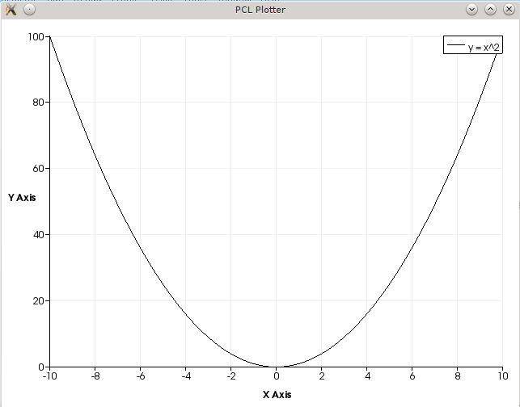

PCLPlotter¶
PCLPlotter provides a very straightforward and easy interface for plotting graphs. One can visualize all sort of important plots - from polynomial functions to histograms - inside the library without going to any other software (like MATLAB). Please go through the documentation when some specific concepts are introduced in this tutorial to know the exact method signatures.
The code for the visualization of a plot are usually as simple as the following snippet.
#include<vector>
#include<iostream>
#include<utility>
#include<pcl/visualization/pcl_plotter.h>
//...
using namespace std;
int
main ()
{
//defining a plotter
pcl::visualization::PCLPlotter * plotter = new PCLPlotter ();
//defining the polynomial function, y = x^2. Index of x^2 is 1, rest is 0
vector<double> func1 (3,0);
func1[2] = 1;
//adding the polynomial func1 to the plotter with [-10, 10] as the range in X axis and "y = x^2" as title
plotter->addPlotData (func1, -10, 10, "y = x^2");
//display the plot, DONE!
plotter->plot ();
return 0;
}
If this program is compiled and run, you will get the following output
{kind=link}
Basic code structure¶
The following snippet shows the basic structure of code for using PCLPlotter
...
//1. define a plotter. Change the colorscheme if you want some different colorscheme in auto-coloring.
pcl::visualization::PCLPlotter *plotter = new PCLPlotter ("My Plotter");
...
//2. add data to be plotted using addPlotData* () functions
plotter->addPlotData* ();
...
//3. add some properties if required
plotter->setWindowSize (900, 600);
plotter->setYTitle ("this is my own function");
...
//4. display the plot
plotter->plot ()
All the subsequent sections will elaborate the above concept in detail.
Auto-coloring¶
You have the choice to add your own color to the plot in addPlotData*() functions. But if left empty, the plotter will auto-color depending upon a color-scheme.
The default color-scheme is vtkColorSeries::SPECTRUM which contains 7 different (normal) hues over the entire spectrum. The other values are vtkColorSeries::WARM, vtkColorSeries::COOL, vtkColorSeries::BLUES, vtkColorSeries::WILD_FLOWER, vtkColorSeries::CITRUS.
You can change the colorscheme by setColorScheme () function. To reflect the effect of the color-scheme to all the plots call this function before calling any addPlotData*() functions.
Different types of plot input¶
Have a look at the addPlotData() functions in the documentation for their detailed signatures. The prototypes pretty much tell about their functionalities. The following subsections contains some of the important input method of the plot.
Point-Correspondences¶
This the most fundamental way of providing input. Provide the point correspondences, that is (x,y) coordinates, for the plot using a vector<pair> in addPlotData
...
vector<pair<double, double> > data;
populateData (data);
plotter->addPlotData (data,"cos");
...
The other ways of input for point correspondences are two arrays of same length denoting the X and Y values of the correspondences.
Table¶
This is same as the previous one except the fact that the user stores the correspondences in a text file in the form of an space delimited table. This forms a substitute for the plotting using MS Excel. A very simple executable (without decoration) which performs the functionalities of MS Excel Plotter will be the following.
#include<pcl/visualization/pcl_plotter.h>
int
main (int argc, char ** argv)
{
pcl::visualization::PCLPlotter * plotter = new PCLPlotter ();
plotter->addPlotData (argv[1]);
plotter->plot ();
return 0;
}
Polynomial and Rational Functions¶
Polynomial are defined in terms of vector of coefficients and Rational functions are defined in terms of pair of polynomial (pair of numerator and denominator) . See the definition in the documentation. The following snippet plots the function y = 1/x
...
vector<double> func1 (1,0);
func1[0] = 1;
vector<double> func2 (2,0);
func1[1] = 1;
plotter->addPlotData (std::make_pair (func1, func2),-10, 10, "y = 1/x");
...
A custom explicit function¶
User can specify a custom function, f depicting the relation: Y = f(X) in the form of a callback
...
double
identity (double val)
{
return val;
}
...
...
plotter->addPlotData (identity,-10, 10,"identity");
...
Adding other properties and decorations¶
One can add other properties of the plot like title, legends, background colours etc. You can call these functions at any time before any display (plot()/spin*()) function call.
...
plotter->setTitle ("My plot"); //global title
plotter->setXTitle ("degrees");
plotter->setYTitle ("cos");
plotter->setShowLegend (true); //show legends
...
plotter->plot ();
...
Other Functionalities¶
PCLPlotter provides few other important functionalities other than plotting given a well defined plots and correspondences. These includes a histogram plotting functions and all functionalities of the legacy class PCLHistogramVisualizer.
‘Plotting’ Histogram¶
PCLPlotter provides a very convenient MATLAB like histogram plotting function (hist() in MATLAB). It takes raw data and bins them according to their frequency and plot them as bar chart.
...
vector<double> freqdata = generateNomalDistData ();
plotter->addHistogramData (freqdata,10); //number of bins are 10
plotter->plot ();
...
PCLHistogramVisualizer functions¶
All functionalities of PCLHistogramVisualizer has been rewritten and added to the plotter with their signature retained. See the documentation for method details.
Display¶
To display all the plots added use the simple function - plot(). PCLPlotter is also provided with the legacy spin*() functions which can be used for animations or updating the plots with time. The following snippet shows the functionality.
...
//data and callback defined here
...
plotter->addPlotData (func1, -10, 10, "y = x^2");
plotter->spinOnce (2000); //display the plot for 2 seconds
plotter->clearPlots ();
plotter->addPlotData (identity,-10, 10,"identity");
plotter->spinOnce (2000);
plotter->clearPlots ();
plotter->addPlotData (abs,-5, 5,"abs");
plotter->spinOnce (2000);
...
Demo¶
Following is a complete example depicting many usage of the Plotter. Copy it into a file named pcl_plotter_demo.cpp.
Compiling and running the program¶
Add the following lines to your CMakeLists.txt file:
Compile and run the code by the following commands
$ cmake .
$ make
$ ./pcl_plotter_demo
Video¶
The following video shows the the output of the demo.